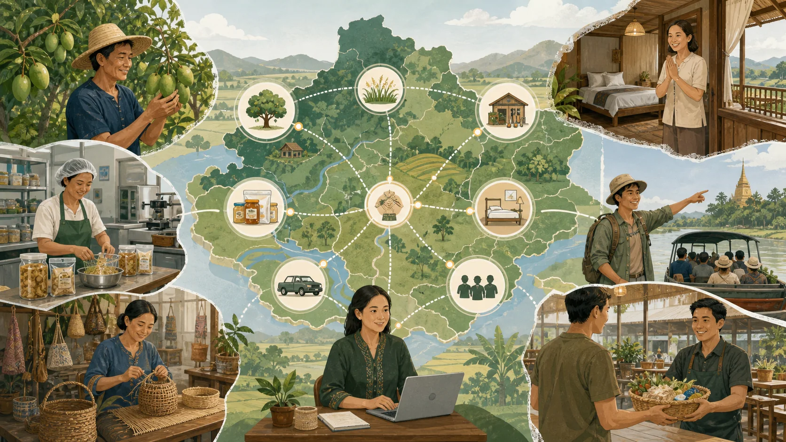
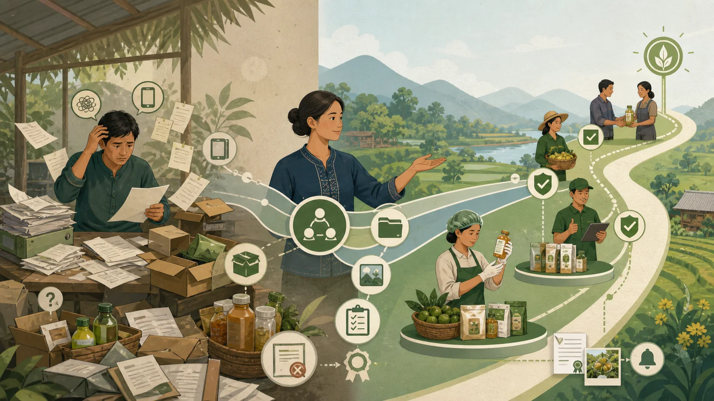
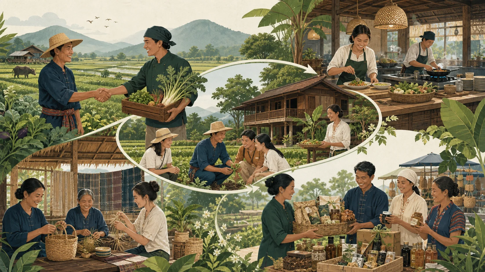
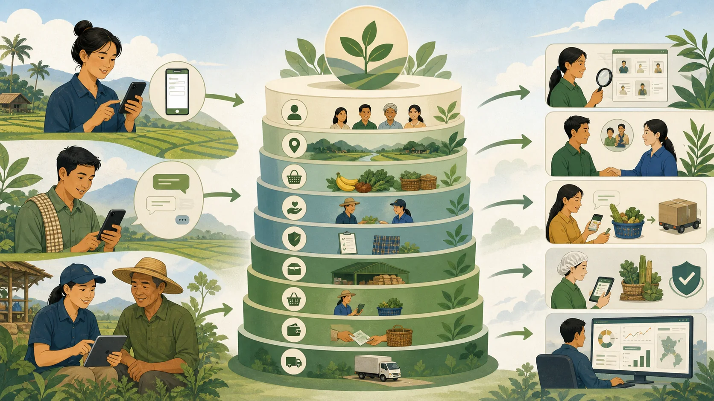
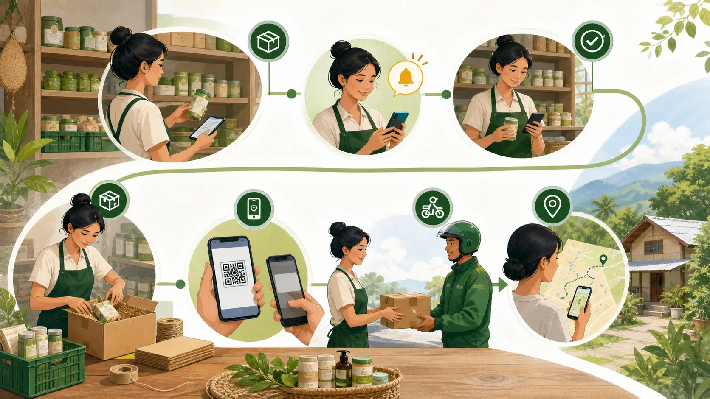
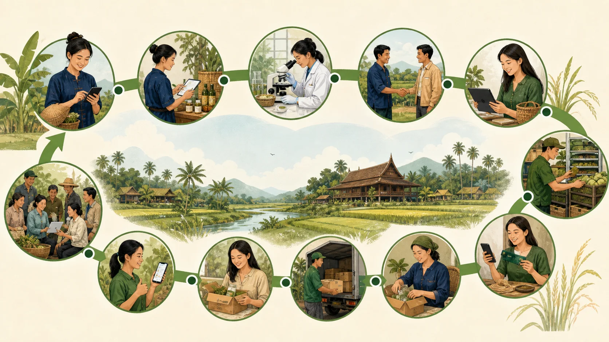
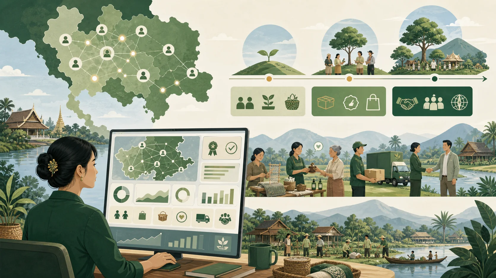

01 · เข้าใจใน 1 นาที
โปรเจกต์นี้ทำอะไร
สร้างฐานข้อมูลกลางเพื่อให้เครือข่ายรู้จักสมาชิก เห็นทรัพยากร และเชื่อมข้อมูลนั้นไปสู่การทำงานและการขายจริง
ภาพรวมระบบนิเวศที่นำคน ทรัพยากร มาตรฐาน ความร่วมมือ และการขายมาเชื่อมกันในแพลตฟอร์มเดียว
พูดให้ง่ายที่สุด:
ระบบนี้ต้องตอบให้ได้ว่า “ในเครือข่ายมีใครบ้าง อยู่ที่ไหน มีอะไร พร้อมขายเท่าไร ผ่านมาตรฐานอะไร และคำสั่งซื้ออยู่ขั้นไหน” เพื่อใช้วางแผน พัฒนาคุณภาพ และสร้างรายได้ร่วมกัน
หน้าที่ 01
รู้จักสมาชิก
รู้ว่าในเครือข่ายมีบุคคล กลุ่ม ฟาร์ม และธุรกิจใดบ้าง
หน้าที่ 02
เห็นทรัพยากร
รู้ว่าสมาชิกแต่ละรายมีสินค้า พื้นที่ ความรู้ และความสามารถอะไร
หน้าที่ 03
เห็นภาพรวม
ดูข้อมูลผ่านแผนที่และหน้าสรุปภาพรวม (Dashboard) แยกตามพื้นที่และประเภท
หน้าที่ 04
บริหารการขายและความร่วมมือ
ใช้ข้อมูลเชื่อมโยงธุรกิจ จัดการคลัง คำสั่งซื้อ การชำระเงิน การจัดส่ง และติดตามผล
รู้จักสมาชิก → เห็นทรัพยากรและมาตรฐาน → เปิดขาย → รับคำสั่งซื้อ → ชำระและจัดส่ง → เรียนรู้จากผลจริง
02 · เป้าหมายระยะแรก
สร้างฐานสมาชิกและเห็นทรัพยากรภายใน
เวอร์ชันแรกควรเป็นระบบข้อมูลของระบบนิเวศเครือข่าย (Ecosystem) ก่อนจะเป็นตลาดกลางออนไลน์ (Marketplace) หรือระบบเชื่อมโยงธุรกิจ

แผนที่เดียวช่วยให้เห็นว่าใครอยู่ที่ไหน มีสินค้า บริการ ทักษะ หรือกำลังรองรับอะไร และเชื่อมต่อกับใครได้บ้าง
ชื่อเรียกที่ตรงกับเป้าหมาย:
แพลตฟอร์มฐานสมาชิกและข้อมูลทรัพยากรของระบบนิเวศเครือข่าย (Ecosystem Membership & Resource Intelligence Platform) — ระบบที่ช่วยให้รู้ว่าในเครือข่ายมีใคร อยู่ที่ไหน มีทรัพยากรอะไร มีความสามารถอะไร และพร้อมร่วมมือเรื่องใด
6 ความสามารถหลักของระยะแรก
01 · ฐานสมาชิก (Member Registry)
ฐานสมาชิก
เก็บข้อมูลบุคคล กลุ่ม ฟาร์ม และธุรกิจไว้ในระบบเดียวกัน
02 · แผนที่ทรัพยากร (Resource Mapping)
แผนที่ทรัพยากร
เห็นสินค้า พื้นที่ เครื่องมือ ความรู้ และกำลังการผลิตที่มีอยู่
03 · แผนที่พื้นที่ (Location Mapping)
ตำแหน่งและพื้นที่
ดูการกระจายตัวของสมาชิกและทรัพยากรตามจังหวัด อำเภอ และกลุ่มพื้นที่ (Cluster)
04 · แผนที่ความสามารถ (Capability Mapping)
ความสามารถ
รู้ว่าใครเชี่ยวชาญเรื่องอะไร และช่วยเครือข่ายด้านใดได้บ้าง
05 · ความต้องการและความสนใจ (Need & Interest)
ความต้องการ
รู้ว่าสมาชิกต้องการอะไร สนใจเรื่องใด และพร้อมเข้าร่วมโครงการแบบไหน
06 · หน้าสรุประบบนิเวศเครือข่าย (Ecosystem Dashboard)
ภาพรวมเครือข่าย
สรุปจำนวนสมาชิก ทรัพยากร จุดแข็ง ช่องว่าง และโอกาสของแต่ละพื้นที่
ข้อมูลที่ควรเก็บในระยะแรก
| กลุ่มข้อมูล | ตัวอย่างข้อมูล | นำไปใช้อะไร |
|---|
| ตัวตนสมาชิก | ชื่อ ประเภทสมาชิก ผู้ติดต่อ และบทบาท | สร้างทะเบียนสมาชิกและแบ่งกลุ่มผู้ใช้งาน |
| พื้นที่ | ที่อยู่ จังหวัด อำเภอ ตำบล และพิกัดแผนที่ (GPS) | แสดงบนแผนที่และวิเคราะห์รายพื้นที่ |
| ทรัพยากร | สินค้า บริการ กิจกรรม พื้นที่ เครื่องมือ และวัตถุดิบ | เห็นสิ่งที่เครือข่ายมีและสิ่งที่ยังขาด |
| ความสามารถ | ความรู้ ทักษะ ประสบการณ์ และกำลังรองรับ | ค้นหาผู้เชี่ยวชาญและออกแบบโครงการร่วม |
| ความต้องการ | สิ่งที่ต้องการความช่วยเหลือและเรื่องที่สนใจ | วางแผนกิจกรรม การพัฒนา และความร่วมมือ |
| ความพร้อม | พร้อมเข้าร่วมโครงการ พร้อมขาย หรือยังต้องพัฒนา | แยกสมาชิกตามระดับความพร้อม |
| คุณภาพข้อมูล | ผู้กรอก ผู้ตรวจ วันที่อัปเดต และความยินยอม | รักษาความน่าเชื่อถือและคุ้มครองข้อมูลส่วนบุคคล |
ลำดับการทำงานสำหรับสร้างฐานระบบนิเวศเครือข่าย
เชิญสมาชิกบุคคล กลุ่ม ฟาร์ม และธุรกิจ
กรอกข้อมูลผ่าน LINE หรือแบบฟอร์มเว็บ (Web Form)
ช่วยเก็บข้อมูลผู้ประสานงานเครือข่ายประจำพื้นที่ลงพื้นที่
ตรวจสอบตัวตน พิกัด และความครบถ้วน
จัดหมวดหมู่สมาชิก ทรัพยากร และความสามารถ
แสดงผลฐานสมาชิก แผนที่ และหน้าสรุปภาพรวม
วิเคราะห์จุดแข็ง ช่องว่าง และโอกาส
อัปเดตยืนยันข้อมูลเป็นระยะ
ผลลัพธ์ของระยะแรกคือข้อมูลที่ค้นหาได้ เชื่อถือได้ และเห็นภาพรวมจริง ไม่ใช่จำนวนรายชื่อที่เก็บไว้เฉย ๆ
ระบบต้องตอบคำถามเหล่านี้ได้
- เรามีสมาชิกทั้งหมดกี่ราย และเป็นสมาชิกประเภทใด
- สมาชิกอยู่ในจังหวัดหรือพื้นที่ใดบ้าง
- แต่ละพื้นที่มีทรัพยากรอะไรและจำนวนเท่าไร
- ใครมีความรู้หรือความเชี่ยวชาญเรื่องใด
- สมาชิกต้องการความช่วยเหลืออะไร
- ใครพร้อมเข้าร่วมโครงการหรือทำงานร่วมกัน
- พื้นที่ใดมีศักยภาพพัฒนาเป็นกลุ่มความร่วมมือในพื้นที่ (Cluster)
- ข้อมูลของใครต้องตรวจหรืออัปเดตใหม่
ลำดับการเติบโตของแพลตฟอร์ม
-
ฐานสมาชิกและทรัพยากร
รวบรวม ตรวจสอบ และจัดหมวดข้อมูลให้ค้นหาได้
เป้าหมายเริ่มต้น
-
หน้าสรุปภาพรวมและการวิเคราะห์ (Dashboard)
มองเห็นจำนวน การกระจาย จุดแข็ง และช่องว่างของระบบนิเวศเครือข่าย
-
แนะนำความร่วมมือ
ค้นหาสมาชิกที่มีทรัพยากรหรือความสามารถที่เกี่ยวข้องกัน
-
การเชื่อมโยงความร่วมมือทางธุรกิจ (Business Matching)
เชื่อมทรัพยากรที่มี (Supply) กับความต้องการ (Demand) เมื่อข้อมูลทั้งสองฝั่งพร้อม
-
พื้นที่ประสานความร่วมมือและการติดตามผล
รองรับการทดลองร่วมงาน บันทึกแนวทางความร่วมมือ การส่งมอบ และคะแนนความน่าเชื่อถือ
-
ระบบบริหารการขายของสมาชิก
จัดการสินค้า คลัง คำสั่งซื้อ การแจ้งเตือน การชำระเงิน และการจัดส่ง โดยเชื่อมกับข้อมูลสมาชิกและมาตรฐานเดิม
หลักสำคัญ
ระบบซื้อขายเต็มรูปแบบยังไม่ควรเปิดก่อนข้อมูลสมาชิก สินค้า มาตรฐาน และจำนวนพร้อมขายมีคุณภาพ แต่ความสามารถด้านคลัง คำสั่งซื้อ การชำระเงิน และการจัดส่งถือเป็นขอบเขตของระบบระยะถัดไปที่ต้องออกแบบไว้ตั้งแต่ต้น
03 · เหตุผลที่ต้องมีระบบ
ปัญหาที่ต้องการแก้

ระบบเปลี่ยนข้อมูลที่กระจัดกระจายให้เป็นสถานะที่ตรวจสอบได้ พร้อมเห็นว่าปัจจุบันผ่านมาตรฐานใดและควรพัฒนาไปถึงขั้นไหน
เกษตรกรและฟาร์ม
- มีผลผลิตแต่หาผู้ซื้อประจำยาก
- เข้าถึงโรงแรมและร้านอาหารโดยตรงได้ยาก
- ข้อมูลสินค้า ราคา และกำลังผลิตกระจัดกระจาย
- ยอดคลัง คำสั่งซื้อ และงานจัดส่งติดตามแยกหลายช่องทาง
- ตรวจยอดชำระและแจ้งลูกค้าด้วยคน ทำให้ตกหล่นได้
- บางรายไม่สะดวกกรอกข้อมูลเอง
ธุรกิจท่องเที่ยว
- หาผู้ผลิตในพื้นที่ที่ไว้ใจได้ยาก
- ไม่รู้ว่าใครมีของตรงกับความต้องการ
- ใช้เวลาตรวจสอบคู่ค้าแต่ละรายมาก
- ติดตามการชำระเงินและสถานะส่งสินค้าจากหลายผู้ขายได้ยาก
- ต้องการสินค้าและกิจกรรมที่มีเรื่องราวท้องถิ่น
ผู้ดูแลเครือข่าย
- ไม่มีฐานข้อมูลกลางของทั้งผู้ขายและผู้ซื้อ
- มองไม่เห็นว่าแต่ละพื้นที่มีของอะไร
- ติดตามไม่ได้ว่าการจับคู่เกิดผลจริงหรือไม่
- ไม่มีข้อมูลคำสั่งซื้อ ยอดขาย และการส่งมอบจริงเพื่อใช้ตัดสินใจ
- วางแผนพัฒนาเศรษฐกิจรายพื้นที่ได้ยาก
ปัญหาด้านมาตรฐานสินค้าและบริการ
ปัญหาข้ามทั้งระบบ
ข้อมูลมาตรฐานกระจัดกระจาย และมองไม่เห็นแผนยกระดับคุณภาพ
สมาชิกบางรายมีใบรับรองอยู่แล้ว บางรายกำลังเตรียมขอ และบางรายยังไม่รู้ว่าต้องเริ่มจากอะไร แต่ข้อมูลเหล่านี้มักอยู่ในเอกสารกระดาษ รูปภาพ หรือบทสนทนา ทำให้เครือข่ายไม่เห็นสถานะจริงและวางแผนช่วยเหลือได้ยาก
ปัญหาของข้อมูลปัจจุบัน
- ไม่รู้ว่าสมาชิกผ่านมาตรฐานใดแล้วบ้าง
- ไม่รู้ว่าใบรับรองใช้กับองค์กร ฟาร์ม สินค้า หรือบริการใด
- ไม่มีหลักฐาน ผู้ตรวจสอบ และวันหมดอายุที่ชัดเจน
- ไม่รู้ว่าสมาชิกต้องการผ่านมาตรฐานใดเป็นลำดับต่อไป
- ไม่มีข้อมูลช่องว่าง งบประมาณ และความช่วยเหลือที่ต้องการ
ผลกระทบต่อระบบนิเวศเครือข่าย (Ecosystem)
- ควบคุมคุณภาพสินค้าและบริการได้ไม่สม่ำเสมอ
- อาจแสดงสถานะผ่านมาตรฐานทั้งที่ใบรับรองหมดอายุแล้ว
- ไม่รู้ว่าสมาชิกรายใดพร้อมเข้าสู่ตลาดหรือโครงการระดับใด
- วางแผนอบรม ผู้เชี่ยวชาญ และงบสนับสนุนไม่ได้
- การค้นหาและจับคู่ธุรกิจมีความเสี่ยงจากข้อมูลที่ไม่ครบ
สิ่งที่ระบบต้องตอบให้ได้
สมาชิกผ่านมาตรฐานอะไรแล้ว ใช้กับสินค้า สถานที่ หรือบริการใด หลักฐานตรวจแล้วหรือยัง หมดอายุเมื่อไร ต้องการพัฒนาไปสู่มาตรฐานใดในเฟสไหน และต้องการความช่วยเหลือเรื่องอะไร
04 · ผู้ใช้งาน
ใครอยู่ในระบบบ้าง
| กลุ่ม |
ทำอะไร |
ให้ข้อมูลอะไร |
ได้อะไรกลับไป |
| เกษตรกร / ฟาร์ม |
ขายสินค้า จัดกิจกรรม และบริหารงานขาย |
ข้อมูลฟาร์ม สินค้า ปริมาณ ราคา มาตรฐาน คลัง และสถานะจัดส่ง |
ผู้ซื้อ โอกาสสร้างรายได้ และเครื่องมือจัดการคลัง คำสั่งซื้อ เงิน และการส่ง |
| โรงแรม / ร้านอาหาร / ธุรกิจท่องเที่ยว |
ค้นหา สั่งซื้อ ชำระเงิน จัดแพ็กเกจ หรือขายของฝาก |
สินค้าที่ต้องการ ปริมาณ รอบรับสินค้า งบ และมาตรฐาน |
ผู้ผลิตที่ตรงความต้องการ การสั่งซื้อที่ชัดเจน และสถานะส่งสินค้าที่ติดตามได้ |
| ผู้ประสานงานเครือข่ายประจำพื้นที่ |
ช่วยสมาชิกในแต่ละพื้นที่ |
ข้อมูลจากการลงพื้นที่ ผลตรวจสอบ และความคืบหน้าของความร่วมมือ |
เครื่องมือเก็บข้อมูลและรายงานผลงานในพื้นที่ |
| ผู้ดูแลระบบกลาง |
ดูแลคุณภาพและกติกา |
หมวดหมู่ สิทธิ์ผู้ใช้ ผลตรวจสอบ กฎแนะนำ การขาย และข้อร้องเรียน |
ภาพรวมเครือข่าย ยอดขาย คุณภาพการส่งมอบ และข้อมูลตัดสินใจ |
| นักท่องเที่ยว |
เป็นลูกค้าปลายทาง |
รีวิวหรือความพึงพอใจ หากเก็บในอนาคต |
อาหาร กิจกรรม และสินค้าท้องถิ่นที่มีเรื่องราว |
05 · การสร้างรายได้ร่วมกัน
ธุรกิจเชื่อมกัน 3 แบบ

ข้อมูลเดียวกันสามารถต่อยอดเป็นการขายวัตถุดิบ กิจกรรมท่องเที่ยว และสินค้าร่วมแบรนด์ โดยเริ่มจากการร่วมงานแบบเข้าใจง่าย
01
วัตถุดิบจากฟาร์มสู่โต๊ะอาหาร (Farm-to-Table)
ฟาร์มขายวัตถุดิบสดให้โรงแรมหรือร้านอาหารเป็นประจำ
ตัวอย่าง: ฟาร์มไข่ส่งไข่ 3,000 ฟองให้โรงแรมทุกเดือน ระบบใช้ชนิดสินค้า ปริมาณ ราคา พื้นที่ส่ง และมาตรฐานในการจับคู่
02
การท่องเที่ยวเชิงเกษตร (Agri-Experience)
ฟาร์มขายกิจกรรมร่วมกับที่พักหรือบริษัททัวร์
ตัวอย่าง: รีสอร์ตขายแพ็กเกจห้องพักพร้อมกิจกรรมเก็บเมล่อน ระบบใช้ประเภทกิจกรรม ความจุ ราคา เวลา ระยะทาง และสิ่งอำนวยความสะดวกในการจับคู่
03
ของฝากร่วมแบรนด์ (Co-Branded Souvenir)
ที่พักนำสินค้าแปรรูปจากชุมชนมาขายหรือทำเป็นของต้อนรับ
ตัวอย่าง: รีสอร์ตใช้แยมผลไม้ของชุมชนเป็นของต้อนรับ (Welcome Gift) ระบบใช้จำนวนสินค้าพร้อมส่ง ราคาส่ง ราคาขาย อายุสินค้า มาตรฐาน และความพร้อมทำแบรนด์ร่วมในการจับคู่
06 · แผนภาพระบบ (System Diagram)
ภาพรวมการทำงานของระบบ
ข้อมูลเดินทางจากคนในเครือข่ายเข้าสู่ฐานข้อมูลกลาง แล้วเชื่อมต่อไปยังการค้นหา ความร่วมมือ คลังสินค้า คำสั่งซื้อ การชำระเงิน และการจัดส่ง

โครงสร้างระบบแบบง่าย: รับข้อมูลหลายช่องทาง จัดไว้ในฐานข้อมูลกลาง แล้วนำไปใช้กับงานเครือข่ายและงานขาย
จากข้อมูล → ไปสู่ธุรกิจ
ผู้ให้ข้อมูล
ฟาร์ม ธุรกิจท่องเที่ยว และผู้ประสานงานเครือข่ายประจำพื้นที่
→
ช่องทางกรอก
บัญชี LINE ทางการ (LINE OA), แบบฟอร์มใน LINE (LIFF), แบบฟอร์มเว็บ และการช่วยกรอกข้อมูล
→
ฐานข้อมูลกลาง
สมาชิก สินค้า มาตรฐาน ความต้องการ คลังสินค้า คำสั่งซื้อ การชำระเงิน และการจัดส่ง
→
ผลลัพธ์
เห็นทรัพยากร เชื่อมโยงธุรกิจ รับคำสั่งซื้อ ติดตามการส่งมอบ และวัดผลได้
↶ ทุกคำสั่งซื้อ การชำระเงิน การส่งมอบ และคะแนน จะอัปเดตคลังสินค้า ความน่าเชื่อถือ และภาพรวมเครือข่าย
ระบบจึงไม่ได้เก็บเพียงรายชื่อสมาชิก แต่เชื่อมข้อมูลสมาชิกกับการดำเนินงานและผลลัพธ์ทางธุรกิจจริง
ลำดับการสร้าง
เริ่มจากฐานสมาชิก ทรัพยากร มาตรฐาน และหน้าสรุปภาพรวมก่อน จากนั้นเปิดระบบบริหารสินค้า คลังสินค้า คำสั่งซื้อ และการแจ้งเตือน เมื่อกระบวนการขายนิ่งแล้วจึงเชื่อมการชำระเงินออนไลน์และผู้ให้บริการขนส่ง
07 · การรับข้อมูล (Data Intake)
เก็บข้อมูลอย่างไร
สมาชิกกรอกเองได้ ผู้ประสานงานเครือข่ายประจำพื้นที่ช่วยกรอกได้ และผู้ดูแลตรวจข้อมูลก่อนนำไปใช้งาน
ตามเอกสารต้นฉบับ
สมาชิกกรอกเอง
เปิดแบบฟอร์มผ่านบัญชี LINE ทางการ (LINE OA) แบบฟอร์มใน LINE (LIFF) หรือเว็บบนโทรศัพท์ แล้วกรอกข้อมูลและอัปโหลดรูป
ตามเอกสารต้นฉบับ
ผู้ประสานงานเครือข่ายประจำพื้นที่ช่วยกรอก
ลงพื้นที่ สัมภาษณ์ ปักพิกัด ถ่ายรูป และกรอกแทนสมาชิก เหมาะกับคนที่ไม่สะดวกใช้ระบบเอง
ควรเพิ่ม
ผู้ดูแลตรวจข้อมูล
ตรวจความครบถ้วน ลบรายการซ้ำ เช็กใบรับรอง และอนุมัติก่อนนำข้อมูลไปจับคู่
ระบบบันทึกอัตโนมัติ
ข้อมูลจากการขาย
คำสั่งซื้อ การจองสินค้า การชำระเงิน และสถานะจัดส่งจะอัปเดตจากเหตุการณ์ที่เกิดขึ้นจริง โดยสมาชิกไม่ต้องกรอกข้อมูลซ้ำทุกครั้ง
สิ่งที่ต้องบันทึกทุกครั้ง
ระบบควรรู้ว่าใครเป็นคนกรอก ใครเป็นเจ้าของข้อมูล ใครเป็นคนตรวจ กรอกเมื่อไร และแก้ไขล่าสุดเมื่อไร เพื่อป้องกันข้อมูลผิดหรือหาคนรับผิดชอบไม่ได้
08 · โครงสร้างข้อมูล (Data Structure)
แบบเก็บข้อมูลฉบับปัจจุบัน
ข้อมูลต้องรองรับทั้งการมองเห็นทรัพยากรของเครือข่าย การยกระดับมาตรฐาน และการบริหารการขายของสมาชิกผู้ผลิตหรือผู้ประกอบการ
ข้อมูลสินค้าและบริการไม่ได้มีแค่ชื่อกับราคา แต่ต้องเชื่อมเจ้าของ แหล่งผลิต จำนวนพร้อมขาย หลักฐาน มาตรฐานปัจจุบัน และเป้าหมายระยะถัดไป
หลักสำคัญ:
ข้อมูลสมาชิกเป็นจุดเริ่มต้น แต่สินค้า มาตรฐาน คลังสินค้า คำสั่งซื้อ การชำระเงิน และการจัดส่งต้องแยกเป็นรายการของตัวเอง เพื่ออัปเดตข้อมูลปัจจุบันได้โดยไม่ลบประวัติเดิม
แบบเก็บข้อมูลแบ่งเป็น 9 ชุด
เก็บตั้งแต่ระยะแรก
1. สมาชิกและสิทธิ์ใช้งาน
- ชื่อบุคคล กลุ่ม ฟาร์ม หรือกิจการ
- ประเภทสมาชิกและบทบาทในเครือข่าย
- ผู้ติดต่อ เบอร์โทร LINE และอีเมล
- เลขทะเบียนหรือข้อมูลยืนยันตัวตนที่จำเป็น
- ผู้ดูแลบัญชีและสิทธิ์ของเจ้าของหรือพนักงาน
- ความยินยอมใช้และเปิดเผยข้อมูล
เก็บตั้งแต่ระยะแรก
2. สถานที่และพื้นที่ให้บริการ
- ที่อยู่และพิกัดแผนที่ (GPS)
- ประเภทสถานที่ เช่น ฟาร์ม โรงงาน ร้าน หรือที่พัก
- พื้นที่ผลิต พื้นที่จัดกิจกรรม และสิ่งอำนวยความสะดวก
- วันเวลาเปิดทำการและพื้นที่ให้บริการ
- จุดรับสินค้า จุดเก็บสินค้า และรัศมีจัดส่ง
- รูปภาพและผู้ประสานงานประจำสถานที่
เก็บตั้งแต่ระยะแรก
3. สินค้า บริการ และกำลังรองรับ
- ผลผลิตสด สินค้าแปรรูป หรือกิจกรรมท่องเที่ยว
- ชื่อ หมวด รายละเอียด รูปภาพ และหน่วยนับ
- ฤดูกาล ปริมาณผลิต และจำนวนรองรับต่อรอบ
- ราคาขายส่ง ราคาขายปลีก และจำนวนสั่งขั้นต่ำ
- อายุสินค้า วิธีเก็บรักษา และเงื่อนไขจัดส่ง
- สถานะพร้อมขาย พร้อมให้บริการ หรือหยุดชั่วคราว
เก็บตั้งแต่ระยะแรก
4. ความสามารถ ความต้องการ และความพร้อม
- ความรู้ ทักษะ เครื่องมือ และกำลังคนที่มี
- เรื่องที่ต้องการความช่วยเหลือหรือพัฒนา
- ตลาดหรือกลุ่มลูกค้าที่ต้องการเข้าถึง
- ความสนใจเข้าร่วมโครงการหรือทำงานร่วมกัน
- ระดับความพร้อม: เริ่มต้น กำลังพัฒนา หรือพร้อมดำเนินงาน
- เป้าหมาย ระยะเวลา ผู้รับผิดชอบ และความคืบหน้า
ควบคุมคุณภาพ
5. มาตรฐานสินค้าและบริการ
- ชื่อมาตรฐานและใช้กับองค์กร สถานที่ สินค้า หรือบริการใด
- สถานะ: ผ่านแล้ว กำลังเตรียม ต้องการพัฒนา หมดอายุ หรือไม่เกี่ยวข้อง
- หน่วยงานรับรอง เลขที่ใบรับรอง และไฟล์หลักฐาน
- วันที่รับรอง วันหมดอายุ ผู้ตรวจ และผลการตรวจสอบหลักฐาน
- มาตรฐานเป้าหมายและระยะที่ต้องการดำเนินการ
- ช่องว่าง งบประมาณ การอบรม หรือผู้เชี่ยวชาญที่ต้องการ
เมื่อเปิดระบบขาย
6. คลังสินค้า
- รหัสสินค้า จุดเก็บ ล็อตการผลิต และวันหมดอายุ
- จำนวนรับเข้า จำนวนคงเหลือ จำนวนที่ถูกจอง และจำนวนพร้อมขาย
- จุดเตือนสินค้าใกล้หมดหรือใกล้หมดอายุ
- ต้นทุนต่อหน่วยและมูลค่าสินค้าคงเหลือ เฉพาะผู้มีสิทธิ์ด้านการเงิน
- การปรับยอด ของเสีย ของคืน และเหตุผลที่แก้ไข
- ผู้ทำรายการและเวลาที่เกิดรายการ
เมื่อเปิดระบบขาย
7. คำสั่งซื้อ
- เลขคำสั่งซื้อ ผู้ซื้อ ผู้ขาย และช่องทางที่สั่ง
- สินค้า จำนวน ราคา ส่วนลด ภาษี และยอดรวม
- ที่อยู่รับสินค้า วันที่ต้องการรับ และหมายเหตุ
- สถานะตั้งแต่รับคำสั่งซื้อจนเสร็จสิ้น
- รายการสินค้าที่ถูกจอง ตัดคลัง หรือคืนเข้าคลัง
- เหตุผลการยกเลิก คืนสินค้า หรือคืนเงิน
เมื่อเปิดระบบขาย
8. การชำระเงินและการจัดส่ง
- ช่องทางชำระ ยอดชำระ เลขอ้างอิง และสถานะการชำระเงิน
- เวลาชำระ หลักฐาน ใบเสร็จ และรายการคืนเงิน
- วิธีจัดส่ง ผู้ให้บริการ และค่าจัดส่ง
- เลขติดตาม สถานะ ตำแหน่ง และเวลาคาดว่าจะถึง
- หลักฐานส่งมอบ ผู้รับ และปัญหาที่เกิดขึ้น
- เงื่อนไขควบคุมอุณหภูมิเมื่อสินค้าต้องดูแลเป็นพิเศษ
ใช้ทุกระยะ
9. เจ้าของข้อมูลและประวัติการเปลี่ยนแปลง
- เจ้าของข้อมูล ผู้กรอก ผู้ตรวจ และผู้อนุมัติ
- วันสร้าง วันตรวจ และวันที่อัปเดตล่าสุด
- แหล่งที่มาและระดับความน่าเชื่อถือ
- ประวัติว่าใครแก้อะไร เมื่อไร และเพราะเหตุใด
- สถานะข้อมูล: ฉบับร่าง รอตรวจ ใช้งานได้ หรือข้อมูลเก่า
- สิทธิ์การมองเห็นและระยะเวลาการเก็บรักษา
ข้อมูลใดต้องอัปเดตเมื่อไร
| กลุ่มข้อมูล | จังหวะอัปเดต | ผู้รับผิดชอบหลัก | ระบบช่วยอย่างไร |
|---|
| สมาชิกและสถานที่ | เมื่อมีการเปลี่ยนแปลง และยืนยันอย่างน้อยปีละครั้ง | เจ้าของข้อมูลหรือผู้ประสานงานพื้นที่ | แจ้งเตือนให้ตรวจและยืนยันข้อมูลเดิม |
| สินค้า บริการ และกำลังรองรับ | ทุกวันที่ 25 หรือเมื่อราคาและความพร้อมเปลี่ยน | ผู้ผลิตหรือผู้ประกอบการ | สร้างรายการเดือนถัดไปจากข้อมูลเดิมให้แก้ไขได้ |
| ความต้องการและความพร้อม | ทุก 3 เดือน หรือเมื่อเป้าหมายเปลี่ยน | สมาชิกและผู้ประสานงานพื้นที่ | เตือนงานค้างและสรุปช่องว่างที่ต้องช่วยเหลือ |
| มาตรฐานและใบรับรอง | ทันทีเมื่อสถานะเปลี่ยน และก่อนหมดอายุ 60, 30 และ 7 วัน | สมาชิกและผู้ตรวจข้อมูล | เตือนต่ออายุและพักสถานะรับรองเมื่อหมดอายุ |
| คลังสินค้า | ทันทีเมื่อรับเข้า จอง ยกเลิก ส่งออก คืน หรือปรับยอด | ระบบและพนักงานคลัง | คำนวณจำนวนพร้อมขายและเตือนสินค้าใกล้หมด |
| คำสั่งซื้อ การชำระเงิน และการจัดส่ง | ทุกครั้งที่สถานะเปลี่ยน | ระบบขาย ผู้ให้บริการชำระเงิน และผู้ให้บริการขนส่ง | บันทึกเวลา แจ้งผู้เกี่ยวข้อง และรักษาประวัติอัตโนมัติ |
ความสัมพันธ์ของข้อมูลที่ต้องออกแบบให้ถูก
สมาชิกหนึ่งรายมีได้หลายสถานที่ หลายสินค้า หลายใบรับรอง และหลายคลัง สินค้าหนึ่งรายการมีได้หลายล็อต ส่วนคำสั่งซื้อหนึ่งรายการมีสินค้า การชำระเงิน และการจัดส่งได้มากกว่าหนึ่งรายการ จึงไม่ควรเก็บทั้งหมดรวมไว้ในช่องข้อความเดียว
09 · ระบบบริหารการขายของสมาชิก
ผู้ผลิตและผู้ประกอบการจัดการงานขายได้ในที่เดียว
สมาชิกที่ได้รับสิทธิ์เป็นผู้ขายสามารถดูสินค้า คลัง คำสั่งซื้อ การชำระเงิน และการจัดส่งจากหน้าจอเดียว โดยข้อมูลทุกส่วนเชื่อมกลับไปยังโปรไฟล์และมาตรฐานของสมาชิก

งานหลังบ้านของผู้ขายเชื่อมต่อกันตั้งแต่ตรวจของ รับออร์เดอร์ ยืนยันเงิน แพ็กสินค้า ไปจนถึงติดตามการส่งมอบ
สินค้าและราคาขาย
เพิ่มสินค้า รูปภาพ ราคา หน่วยนับ จำนวนสั่งขั้นต่ำ ฤดูกาล มาตรฐาน และเปิดหรือปิดการขายได้เอง
คลังสินค้า
ดูจำนวนคงเหลือ จำนวนที่ถูกจอง จำนวนพร้อมขาย ล็อต วันหมดอายุ และประวัติการปรับยอด ป้องกันการขายเกินจำนวนจริง
คำสั่งซื้อ
รับ ยืนยัน ปฏิเสธ เตรียมสินค้า ยกเลิก คืนสินค้า หรือปิดคำสั่งซื้อ พร้อมดูรายละเอียดผู้ซื้อและยอดเงิน
การแจ้งเตือน
แจ้งผ่านระบบและ LINE เมื่อมีคำสั่งซื้อใหม่ รอชำระ ชำระแล้ว ต้องเตรียมสินค้า ใกล้กำหนดส่ง ส่งล่าช้า หรือสินค้าใกล้หมด
การจัดส่งและติดตาม
เลือกวิธีส่ง บันทึกผู้ให้บริการ เลขติดตาม สถานะพัสดุ เวลาคาดว่าจะถึง หลักฐานส่งมอบ และปัญหาการขนส่ง
การชำระเงินออนไลน์
สร้าง QR หรือลิงก์ชำระเงินผ่านผู้ให้บริการรับชำระ ตรวจสถานะอัตโนมัติ ออกหลักฐาน และเชื่อมยอดชำระกับคำสั่งซื้อ
ลำดับการทำงานของคำสั่งซื้อ
รับคำสั่งซื้อตรวจผู้ซื้อ สินค้า จำนวน และที่อยู่
ตรวจและจองสินค้ากันสินค้าออกจากจำนวนพร้อมขาย
สร้างรายการชำระเงินส่ง QR หรือลิงก์ชำระเงิน
ยืนยันการชำระรับสถานะจากผู้ให้บริการโดยอัตโนมัติ
เตรียมสินค้าหยิบ บรรจุ และตรวจคุณภาพ
จัดส่งสร้างเลขติดตามและแจ้งผู้ซื้อ
ยืนยันรับสินค้าเก็บหลักฐานและปัญหาที่พบ
ปิดคำสั่งซื้อตัดคลัง ออกหลักฐาน และอัปเดตรายงาน
หากผู้ซื้อไม่ชำระภายในเวลาที่กำหนด ระบบยกเลิกการจองและคืนสินค้าเข้าสู่จำนวนพร้อมขาย หากยกเลิกหลังชำระ จะเข้าสู่ขั้นตอนคืนเงินตามนโยบาย
สถานะที่ทุกฝ่ายเข้าใจตรงกัน
| สถานะ | ความหมาย | การทำงานของระบบ | ผู้ที่ได้รับแจ้ง |
|---|
| คำสั่งซื้อใหม่ | ผู้ซื้อส่งรายการแล้ว | แจ้งผู้ขายให้ตรวจและตอบรับ | ผู้ขาย |
| รอชำระเงิน | ผู้ขายยืนยันและจองสินค้าแล้ว | สร้าง QR หรือลิงก์พร้อมกำหนดเวลาชำระ | ผู้ซื้อ |
| ชำระแล้ว | ผู้ให้บริการยืนยันยอดสำเร็จ | เปลี่ยนสถานะและเริ่มนับเวลาเตรียมสินค้า | ผู้ซื้อและผู้ขาย |
| กำลังเตรียม | ผู้ขายกำลังหยิบและบรรจุ | เตือนเมื่อใกล้เกินกำหนด | ผู้ขาย |
| จัดส่งแล้ว | สินค้าอยู่ระหว่างขนส่ง | แสดงเลขติดตามและสถานะล่าสุด | ผู้ซื้อและผู้ขาย |
| ส่งสำเร็จ | มีการยืนยันรับสินค้า | ปิดงานส่งและขอคะแนน | ผู้ซื้อและผู้ขาย |
| ยกเลิกหรือคืนเงิน | รายการไม่ดำเนินต่อ | คืนจำนวนสินค้าและบันทึกเหตุผล | ผู้ซื้อ ผู้ขาย และผู้ดูแลเมื่อจำเป็น |
สิทธิ์ของคนในกิจการ
เจ้าของกิจการ
เห็นข้อมูลทั้งหมด ตั้งค่าร้าน ราคา บัญชีรับเงิน สิทธิ์พนักงาน รายงาน และการคืนเงิน
พนักงานขายหรือคลัง
ดูเฉพาะงานที่ได้รับมอบหมาย เช่น คำสั่งซื้อ คลัง การบรรจุ และการจัดส่ง โดยไม่เห็นข้อมูลการเงินทั้งหมด
ผู้ประสานงานเครือข่ายประจำพื้นที่
ช่วยสมาชิกตั้งค่าและติดตามปัญหาได้เฉพาะรายที่ได้รับอนุญาต ไม่ควรเห็นยอดรับเงินหรือข้อมูลส่วนตัวเกินความจำเป็น
รูปแบบการรับเงินที่แนะนำ
แพลตฟอร์มเชื่อมต่อผู้ให้บริการรับชำระเงิน (Payment Gateway) แล้วส่งเงินเข้าบัญชีผู้ขายโดยตรง ระบบเก็บเฉพาะเลขอ้างอิง ยอดเงิน และสถานะ ไม่เก็บข้อมูลบัตรของลูกค้า และไม่พักเงินไว้ในบัญชีของแพลตฟอร์ม
กติกาคลังสินค้าที่ต้องมี
เมื่อผู้ขายยืนยันคำสั่งซื้อ ระบบต้องจองสินค้าทันที หากหมดเวลาชำระหรือยกเลิกต้องคืนจำนวนสินค้าอัตโนมัติ ทุกการปรับยอดต้องมีเหตุผลและผู้ทำรายการ เพื่อป้องกันยอดคลังไม่ตรงกับของจริง
10 · วงจรข้อมูล (Data Lifecycle)
ข้อมูลเดินทางอย่างไร
ข้อมูลสมาชิกและกำลังผลิตอัปเดตตามรอบ ส่วนคลัง คำสั่งซื้อ การชำระเงิน และการจัดส่งต้องเปลี่ยนทันทีตามเหตุการณ์จริง
1. เก็บกรอกเองหรือมีคนช่วย
2. ตรวจเช็กตัวตนและความครบถ้วน
3. จัดหมวดทำชื่อ หน่วย และพื้นที่ให้ตรงกัน
4. เปิดใช้แสดงในระบบค้นหา
5. นำไปใช้ค้นหา เชื่อมโยง หรือรับคำสั่งซื้อ
6. บันทึกผลชำระ ส่งมอบ ปัญหา และคะแนน
7. อัปเดตตามรอบเวลาและเหตุการณ์จริง
ระบบเตือนข้อมูลกำลังผลิตทุกวันที่ 25 เตือนใบรับรองก่อนหมดอายุ และอัปเดตคลังกับคำสั่งซื้อแบบทันทีเมื่อมีรายการเกิดขึ้น
สถานะข้อมูลที่แนะนำ
| สถานะ | แปลว่าอะไร | ระบบทำอย่างไร |
|---|
| ฉบับร่าง (Draft) | กรอกยังไม่ครบ | ยังไม่แสดงให้คนอื่นเห็น |
| รอตรวจ | ส่งข้อมูลแล้ว | อยู่ในคิวของผู้ดูแล |
| ใช้งานได้ | ข้อมูลผ่านการตรวจ | ค้นหาและจับคู่ได้ |
| ต้องอัปเดต | ถึงรอบยืนยันข้อมูล | ส่งข้อความเตือนเจ้าของ |
| ข้อมูลเก่า | ไม่มีการยืนยันตามเวลา | พักจากการจับคู่ชั่วคราว |
| ระงับ | มีปัญหาคุณภาพหรือข้อร้องเรียน | หยุดใช้งานจนตรวจสอบเสร็จ |
| เก็บถาวร | เลิกกิจการหรือเลิกใช้ระบบ | เก็บประวัติแต่ไม่แสดง |
11 · การใช้ข้อมูล (Data Usage)
ระบบนำข้อมูลไปใช้อย่างไร
ค้นหาและดูบนแผนที่
ค้นหาตามพื้นที่ ประเภทสินค้า ราคา ฤดูกาล มาตรฐาน และรัศมีส่งของ
แนะนำคู่ค้า
นำข้อมูลผู้ขายมาเทียบกับความต้องการของผู้ซื้อ แล้วเรียงคู่ที่เหมาะที่สุด
สร้างสรุปโอกาสธุรกิจ
บอกว่าใครต้องการซื้ออะไรจากใคร ปริมาณเท่าไร อยู่ห่างกันแค่ไหน และต้องทำอะไรต่อ
ติดตามและวางแผน
ดูว่าจังหวัดใดมีทรัพยากรที่พร้อมเสนอหรือมีความต้องการมาก โอกาสความร่วมมือค้างอยู่ขั้นไหน และสมาชิกใดน่าเชื่อถือ
บริหารงานขาย
ใช้ข้อมูลคลัง คำสั่งซื้อ การชำระเงิน และการจัดส่ง เพื่อรู้ว่างานใดต้องทำต่อ สินค้าใกล้หมดหรือไม่ และยอดขายเกิดขึ้นจริงเท่าไร
วางแผนยกระดับมาตรฐาน
เห็นใบรับรองที่กำลังหมดอายุ มาตรฐานเป้าหมาย ช่องว่าง และความช่วยเหลือที่สมาชิกแต่ละรายต้องการ
ระบบจับคู่คิดอย่างไร
ขั้นที่ 1: ต้องผ่านเงื่อนไขหลัก
- สินค้าและช่วงเวลาตรงกัน
- ปริมาณรองรับได้
- อยู่ในระยะส่งหรือเดินทางได้
- มีมาตรฐานตามที่ผู้ซื้อต้องการ
- ข้อมูลยังใหม่และใช้งานได้
ขั้นที่ 2: เรียงจากเหมาะมากไปน้อย
- อยู่ใกล้กว่า
- รองรับปริมาณได้มากกว่า
- วิธีส่งของตรงกัน
- อัปเดตข้อมูลล่าสุด
- มีประวัติส่งของดีและคะแนนสูง
ระบบแนะนำ ไม่ได้ตัดสินแทนคน
เอกสารต้นฉบับยังไม่มีกฎคะแนนที่ชัด ช่วงเริ่มต้นควรให้ผู้ประสานงานเครือข่ายประจำพื้นที่หรือผู้ดูแลตรวจรายชื่อก่อนส่งให้คู่ค้า
12 · ลำดับการทำงานตั้งแต่ต้นจนจบ (End-to-End Workflow)
ลำดับการทำงานตั้งแต่เริ่มจนจบ

วงจรทำงานครบตั้งแต่สร้างข้อมูลที่เชื่อถือได้ ไปจนถึงเกิดธุรกรรม ส่งมอบ และนำผลจริงกลับมาพัฒนาเครือข่าย
-
รับสมาชิกเข้าระบบ
สมาชิกกรอกข้อมูลตัวตน สถานที่ ทรัพยากร ความสามารถ และความต้องการผ่าน LINE หรือเว็บ หากไม่สะดวก ผู้ประสานงานเครือข่ายประจำพื้นที่ช่วยกรอกให้
ผลลัพธ์: ข้อมูลสมาชิกและรายการฉบับร่าง
-
ตรวจข้อมูลและเปิดสิทธิ์ผู้ขาย
ตรวจตัวตน พิกัด สินค้า ใบรับรอง และบัญชีรับเงิน จากนั้นกำหนดว่าใครเป็นเจ้าของกิจการ พนักงาน หรือผู้ช่วยดูแล
ผลลัพธ์: สมาชิกและบัญชีผู้ขายพร้อมใช้งาน
-
เปิดสินค้าและตั้งคลัง
ผู้ขายกำหนดรายการสินค้า ราคา ปริมาณพร้อมขาย ล็อต จุดเตือน และเงื่อนไขจัดส่ง ระบบจะแสดงเฉพาะสินค้าที่ข้อมูลและมาตรฐานยังใช้งานได้
ผลลัพธ์: รายการสินค้าพร้อมรับคำสั่งซื้อ
-
ค้นหา เชื่อมโยง และสั่งซื้อ
ผู้ซื้อค้นหาสินค้าหรือระบบแนะนำสมาชิกที่เหมาะ หากเป็นความร่วมมือระยะยาวสามารถทดลองสินค้าและบันทึกเงื่อนไขก่อนสร้างคำสั่งซื้อรายครั้งหรือรายรอบ
ผลลัพธ์: คำสั่งซื้อและสินค้าที่ถูกจอง
-
ชำระเงิน เตรียมสินค้า และจัดส่ง
ระบบส่ง QR หรือลิงก์ชำระเงิน เมื่อยืนยันยอดแล้วจะแจ้งผู้ขายให้เตรียมสินค้า สร้างเลขติดตาม และแจ้งสถานะให้ผู้ซื้อ
ผลลัพธ์: ยอดชำระและสถานะส่งมอบที่ตรวจสอบได้
-
ปิดงานและเรียนรู้จากข้อมูลจริง
เมื่อส่งสำเร็จ ระบบตัดคลัง เก็บคะแนน ปัญหา การซื้อซ้ำ และรายได้ พร้อมใช้ข้อมูลนี้ปรับความน่าเชื่อถือ การแนะนำ และแผนผลิตเดือนถัดไป
ผลลัพธ์: ประวัติธุรกรรมและภาพรวมธุรกิจที่อัปเดตแล้ว
แผนภาพลำดับการทำงานแบบละเอียด
รับสมาชิกบุคคล กลุ่ม ฟาร์ม และธุรกิจ
ตรวจข้อมูลตัวตน พิกัด มาตรฐาน และสิทธิ์
สร้างรายการสินค้ารายละเอียด ราคา และเงื่อนไขขาย
ตั้งคลังจำนวน ล็อต จุดเก็บ และวันหมดอายุ
ค้นหาและเชื่อมโยงเทียบทรัพยากรกับความต้องการ
สร้างคำสั่งซื้อสินค้า จำนวน ราคา และที่อยู่ส่ง
จองสินค้าและแจ้งเตือนกันจำนวนพร้อมขายและแจ้งผู้ขาย
ชำระเงินQR หรือลิงก์ผ่านผู้ให้บริการ
จัดส่งและติดตามเลขติดตาม สถานะ และหลักฐาน
ปิดงานและอัปเดตตัดคลัง คะแนน รายได้ และรายงาน
หากข้อมูลหรือมาตรฐานไม่ผ่าน ระบบส่งกลับไปแก้ไข หากสินค้าไม่พอจะไม่รับยอดเกินจริง และหากชำระไม่สำเร็จหรือยกเลิก ระบบต้องคืนสินค้าที่จองไว้พร้อมเก็บเหตุผล
ถ้าสินค้าพร้อมและชำระสำเร็จ
เข้าสู่การเตรียมสินค้า จัดส่ง ติดตาม ยืนยันรับ และปิดคำสั่งซื้อ
ถ้าสินค้าไม่พอ ชำระไม่สำเร็จ หรือยกเลิก
แจ้งผู้เกี่ยวข้อง คืนจำนวนที่จองไว้ และเก็บเหตุผลเพื่อปรับสินค้า คลัง และการดำเนินงานครั้งต่อไป
13 · ตัวอย่างจริง
โรงแรมต้องการไข่เดือนละ 5,000 ฟอง
- โรงแรมแจ้งว่าต้องการไข่ 5,000 ฟองต่อเดือน ส่งทุกสัปดาห์ และอยู่ไม่เกิน 40 กิโลเมตร
- ระบบค้นหาฟาร์มที่มีไข่พอ อยู่ในพื้นที่ และข้อมูลยังใหม่
- พบฟาร์ม A ส่งได้ 3,000 ฟอง และฟาร์ม B ส่งได้ 2,500 ฟอง
- ระบบเสนอให้ใช้สองฟาร์มร่วมกันเพื่อให้ครบจำนวน
- ผู้ประสานงานเครือข่ายประจำพื้นที่ตรวจข้อมูลและช่วยประสานการทดลองส่ง
- โรงแรมยืนยันราคา วันส่ง คุณภาพ และสร้างคำสั่งซื้อ ระบบแยกรายการให้แต่ละฟาร์มพร้อมจองไข่ในคลัง
- ระบบส่ง QR หรือลิงก์ชำระเงิน เมื่อชำระสำเร็จจะแจ้งทั้งโรงแรมและฟาร์ม
- ฟาร์มเตรียมสินค้า บันทึกการจัดส่ง และโรงแรมติดตามสถานะได้
- เมื่อโรงแรมยืนยันรับสินค้า ระบบปิดคำสั่งซื้อ ตัดคลัง และบันทึกคะแนนการตรงเวลา
- วันที่ 25 ฟาร์มยืนยันกำลังผลิตเดือนถัดไป ระบบจึงวางแผนรอบใหม่จากยอดขายจริงได้
ข้อสังเกต
หนึ่งความต้องการอาจใช้ผู้ขายหลายรายได้ ระบบควรสร้างคำสั่งซื้อย่อยแยกตามผู้ขาย แต่เชื่อมไว้กับความต้องการเดียวกัน เพื่อให้คลัง การชำระเงิน และการจัดส่งของแต่ละรายตรวจสอบได้ชัดเจน
14 · ส่วนประกอบของระบบ (System Modules)
ระบบต้องมีส่วนประกอบอะไรบ้าง
ฐานของระบบ
สมาชิกและทรัพยากร
- บัญชี LINE ทางการ (LINE OA) แบบฟอร์มใน LINE (LIFF) และแบบฟอร์มเว็บ
- เครื่องมือช่วยกรอกสำหรับผู้ประสานงานเครือข่ายประจำพื้นที่
- สมาชิก สถานที่ สินค้า บริการ และความสามารถ
- มาตรฐาน ใบรับรอง และแผนยกระดับคุณภาพ
- ระบบตรวจข้อมูล ความยินยอม และประวัติการแก้ไข
- แผนที่ ระบบค้นหา และระบบช่วยแนะนำความร่วมมือ
- พื้นที่ประสานความร่วมมือและแบบบันทึกแนวทางความร่วมมือ
สำหรับสมาชิกผู้ขาย
บริหารการขาย
- รายการสินค้า ราคา และการเปิดหรือปิดขาย
- คลัง ล็อต วันหมดอายุ และจุดเตือนสินค้า
- คำสั่งซื้อ การจองสินค้า และการคืนสินค้า
- แจ้งเตือนคำสั่งซื้อและงานที่ต้องดำเนินการ
- การจัดส่ง เลขติดตาม และหลักฐานส่งมอบ
- QR หรือลิงก์ชำระเงิน สถานะ และการคืนเงิน
ส่วนกลางและการเชื่อมต่อ
ความปลอดภัยและการกำกับดูแล
- ระบบเข้าสู่ระบบและกำหนดสิทธิ์ตามบทบาท
- ผู้ให้บริการรับชำระเงินและการตรวจสถานะอัตโนมัติ
- ผู้ให้บริการขนส่งและการติดตามสถานะ
- การแจ้งเตือนผ่าน LINE อีเมล หรือภายในระบบ
- ข้อร้องเรียน ข้อพิพาท การคืนเงิน และบันทึกตรวจสอบ
- หน้าสรุป รายงาน ตัวชี้วัด และการส่งออกข้อมูล
ขอบเขตการชำระเงิน: ระบบเชื่อม Payment Gateway เพื่อให้เงินเข้าผู้ขายโดยตรง ไม่เก็บข้อมูลบัตรและไม่พักเงินของสมาชิกไว้ในแพลตฟอร์ม ส่วนระบบพักเงินจนส่งมอบสำเร็จสามารถพิจารณาภายหลังได้หากมีความจำเป็นทางธุรกิจและข้อกฎหมายรองรับ
15 · หน้าสรุปและตัวชี้วัด (Dashboard & KPI)
ควรวัดผลอะไร

หน้าสรุปต้องช่วยเห็นทั้งคุณภาพข้อมูล ความพร้อมของสมาชิก ยอดขาย การส่งมอบ และการเติบโตของเครือข่ายในแต่ละระยะ
ข้อมูลและมาตรฐาน
- สมาชิกที่ใช้งานจริง
- ข้อมูลที่ผ่านการตรวจ
- ข้อมูลที่อัปเดตตรงเวลา
- ใบรับรองที่ใช้งานได้และกำลังหมดอายุ
ความร่วมมือ
- จำนวนคู่ที่แนะนำ
- อัตราการตอบรับ
- อัตราทดลองร่วมงาน
- เวลาที่ใช้จนเกิดความร่วมมือจริง
การขายและปฏิบัติงาน
- คำสั่งซื้อใหม่ รอชำระ และค้างจัดส่ง
- อัตราชำระสำเร็จและอัตรายกเลิก
- สินค้าใกล้หมด ใกล้หมดอายุ หรือขายเกินไม่ได้
- เวลาเตรียมสินค้าและอัตราส่งตรงเวลา
ผลลัพธ์ของสมาชิก
- ยอดขายและปริมาณซื้อขายจริง
- จำนวนการซื้อซ้ำ
- รายได้ใหม่ของสมาชิก
- คะแนน ความพึงพอใจ และข้อร้องเรียน
อย่าวัดแค่จำนวนสมาชิก
สมาชิกเยอะแต่ข้อมูลไม่ใหม่ สินค้าไม่มีพร้อมขาย หรือคำสั่งซื้อไม่ถูกส่งมอบ ไม่ถือว่าระบบสำเร็จ ต้องวัดตั้งแต่คุณภาพข้อมูลจนถึงการชำระเงิน การส่งตรงเวลา และการซื้อซ้ำ
16 · แผนพัฒนาระบบเป็นระยะ
เริ่มจากฐานข้อมูล แล้วต่อยอดสู่ระบบขายเต็มรูปแบบ
ความสามารถทั้งหมดอยู่ในขอบเขตระบบ แต่ควรเปิดใช้งานเป็นลำดับเพื่อให้สมาชิกเรียนรู้ได้ง่ายและลดความผิดพลาดของคลังกับเงิน
-
ระยะที่ 1 · ฐานสมาชิก ทรัพยากร และมาตรฐาน
เริ่มใน 1 จังหวัดหรือกลุ่มพื้นที่ เก็บข้อมูลสมาชิก สถานที่ สินค้า ความสามารถ ความต้องการ ใบรับรอง และรอบอัปเดตข้อมูลให้เชื่อถือได้
ผลลัพธ์: เห็นภาพรวมและความพร้อมของเครือข่าย
-
ระยะที่ 2 · คลัง คำสั่งซื้อ และการแจ้งเตือน
ให้สมาชิกกลุ่มทดลองจัดการสินค้า จำนวนพร้อมขาย รับคำสั่งซื้อ จองสินค้า แจ้งเตือนผ่าน LINE และบันทึกการจัดส่งแบบกรอกสถานะเองก่อน
ผลลัพธ์: พิสูจน์ว่างานขายและยอดคลังเดินได้จริง
-
ระยะที่ 3 · ชำระเงินและติดตามขนส่งอัตโนมัติ
เชื่อม Payment Gateway ให้เงินเข้าผู้ขายโดยตรง เชื่อมสถานะขนส่ง เพิ่มคืนเงิน รายงานยอดขาย และขยายสินค้า ผู้ขาย และพื้นที่เมื่อกระบวนการนิ่งแล้ว
ผลลัพธ์: ระบบขายออนไลน์ครบตั้งแต่สั่งจนส่งสำเร็จ
17 · ก่อนเริ่มพัฒนา
เรื่องที่ยังต้องตัดสินใจ
- ใครเป็นเจ้าของและผู้ดูแลข้อมูล
- ใครตรวจผู้ผลิตและใบรับรอง
- ผู้ประสานงานเครือข่ายประจำพื้นที่ได้ค่าตอบแทนอย่างไร
- แพลตฟอร์มหารายได้จากอะไร
- ใช้ผู้ให้บริการรับชำระเงินรายใด และใครรับผิดชอบค่าธรรมเนียม
- ต้องตรวจบัญชีรับเงินของผู้ขายด้วยวิธีใด
- ใครรับผิดชอบยอดคลัง การนับสินค้า และการอนุมัติปรับยอด
- ใครดูแลการขนส่งและระบบขนส่งควบคุมอุณหภูมิ (Cold Chain)
- จะเชื่อมผู้ให้บริการขนส่งรายใด หรือให้ผู้ขายกรอกสถานะเอง
- สินค้ามีปัญหา ใครรับผิดชอบ และคืนสินค้าหรือคืนเงินอย่างไร
- ใครออกใบเสร็จหรือใบกำกับภาษีให้ผู้ซื้อ
- กฎและคะแนนการแนะนำความร่วมมือคิดอย่างไร
- ข้อมูลใดเปิดเผยและข้อมูลใดเป็นส่วนตัว
- โครงการทดลองแรก (Pilot) จะทำที่ไหน กับสินค้าอะไร
คำว่า “รับประกันยอดซื้อรายเดือน” ต้องใช้ให้ระวัง
ระบบช่วยหาและติดตามความต้องการซื้อได้ แต่ยังรับประกันยอดไม่ได้ หากไม่มีสัญญาซื้อหรือผู้รับความเสี่ยงที่ชัดเจน
ขอบเขตของเอกสารนี้
วิสัยทัศน์ โมเดลธุรกิจ ผู้ใช้ และประเภทสินค้าอ้างอิงจากเอกสารต้นฉบับ ส่วนแบบเก็บข้อมูล มาตรฐาน คลังสินค้า คำสั่งซื้อ การแจ้งเตือน การจัดส่ง การชำระเงิน ตัวชี้วัด และแผนพัฒนาเป็นข้อเสนอที่เพิ่มตามความต้องการปัจจุบัน โดยสมมติให้เงินเข้าผู้ขายผ่าน Payment Gateway โดยตรง